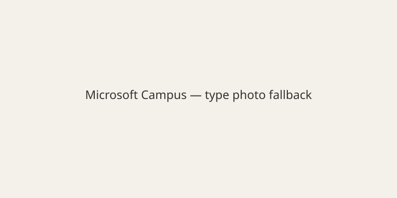

Global · Technology · 13 November 2026
Microsoft 365 outage continues into second day; Outlook and Teams disrupted
ObjectiveNews. Target T 100 · N 0 · C 100.

Microsoft reported that a global outage affecting Microsoft 365 services began on 12 November and continued into 13 November. Services including Outlook, Exchange Online, Teams, SharePoint, Copilot and others experienced disruptions for users in dozens of countries. The company stated there is no indication of a cyber attack. It attributed the problem to a number of servers becoming unexpectedly unavailable after failing automated health checks, which increased load on remaining infrastructure. Partial recovery was reported in Europe and other regions while work continued. Downdetector recorded peaks of approximately 130,000 to 140,000 reports related to Outlook. Governments, airlines and businesses noted impacts. Full root cause and complete restoration timeline are pending a post-incident report.
Agreed facts are the company confirmation of the outage, the affected service categories, the denial of malicious activity, and the ongoing recovery efforts. User-report counts come from third-party monitoring sites. Exact number of affected organizations is not independently tallied in primary releases.

Source articles and scores
| Outlet | Headline | T | N | C |
|---|---|---|---|---|
| Reuters | Microsoft outage drags on for hours, disrupting Outlook, Teams for thousands | 95 | 0 | 100 |
| The Guardian | Microsoft scrambles to fix global outage affecting Teams and Outlook | 94 | 0 | 98 |
Image credit: Wikimedia Commons File:Building92microsoft.jpg. Fallback SVG committed.